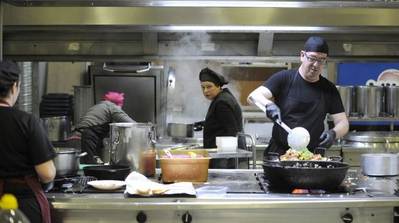

Descripción
Se trata de una ensalada fría elaborada con bacalao desmigado, pimientos verde y rojo cortados en pequeños trozos, cebolla en plumas, aceitunas y tomate fresco, rallado o cortado en dados, a la que no le falta el aliño de un buen aceite de oliva virgen extra, vinagre y, en caso de ser necesario, sal. Es muy similar al empedrat, pero sin las judías blancas.
Ingredientes para 4 personas
- 400g de bacalao desalado
- 3 tomates
- Media cebolla
- Aceitunas negras
- Aceite de oliva virgen extra
Tiempo
- Dificultad: Fácil
- Tiempo total: 30m
- Elaboración: 30m
Elaboración
Empezamos desmigando el bacalao, que previamente habremos desalado. Si queremos ir más rápidos, podemos comprarlo ya desalado. Las cantidades de los ingredientes van un poco a ojo, se puede aumentar o disminuir la cantidad de cualquiera de ellos si lo deseamos. Ponemos el bacalao en una fuente. Cortamos los tomates y la cebolla en cuadraditos y los agregamos al bacalao. Regamos con abundante aceite de oliva. Incorporamos las aceitunas negras y servimos.
Con que acompañar la esqueixada
La esqueixada debe servirse fría, por lo que si tenéis que prepararla con un poco de antelación lo mejor es guardarla en la nevera hasta el momento de servirla. Con una copa de vino blanco está deliciosa y si os apetece, podéis añadirle un poco de atún desmigado y pimiento verde o rojo también cortado a cuadraditos, no será la receta tradicional pero estará deliciosa.esq